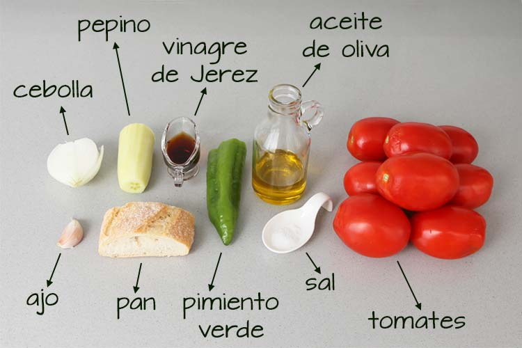
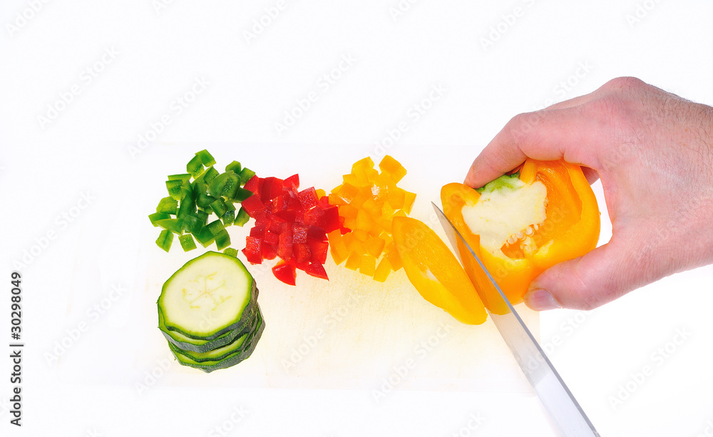
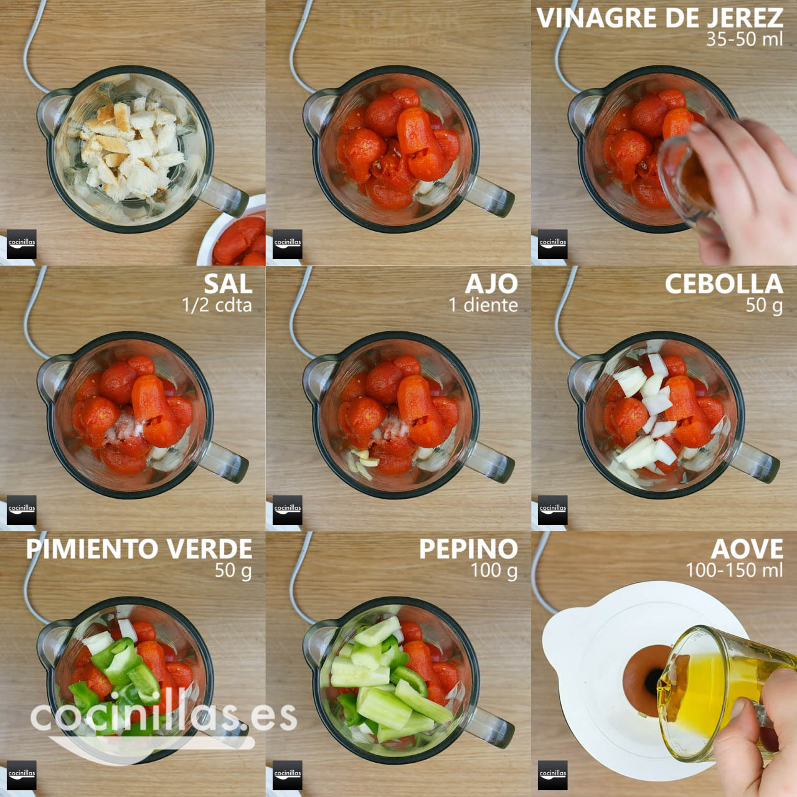
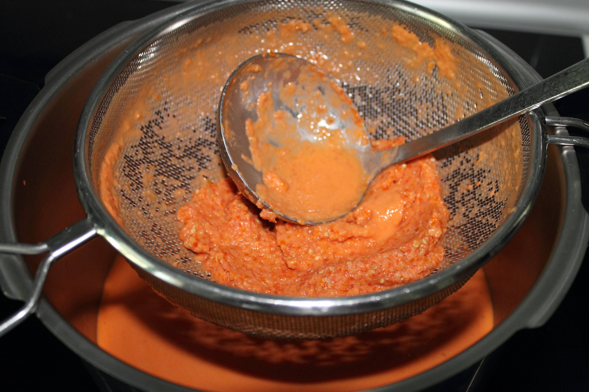
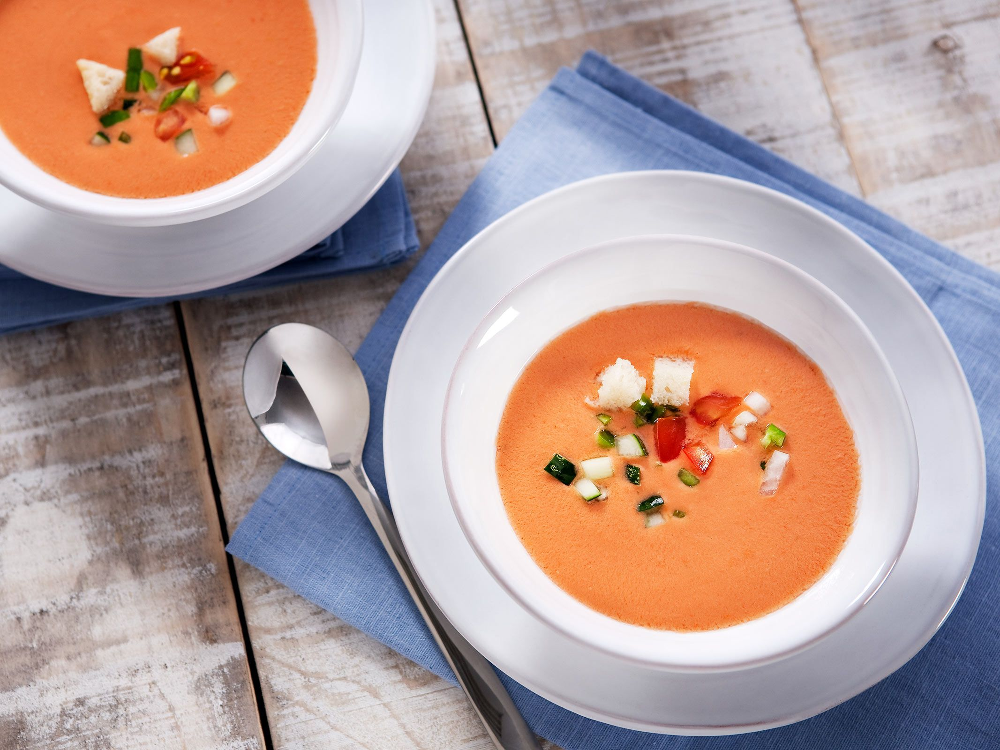

Gazpacho Andaluz
Ingredientes
- Tomates
- Pimiento Verde
- Pepino
- Dientes de ajo
- Aceite de oliva virgen extra
- Pan de hogaza duro
- Agua
- Sal
- Vinagre de Jérez
Pasos a seguir
Dificultad : Media
Tiempo de Elaboración.............15 Minutos
Introducción : El gazpacho es una receta que va en cosas de gustos sobre todo pero hay ingredientes que tienes que ir en todos los gazpachos sea como el pimiento y la cebolla siempre de manera muy picada
- Primer Paso:
Troceamos todos los Ingredientes en la proporción indicada en la introducción
- Segundo Paso
Añadimos todos los ingredientes liquidos, recordamos que el agua tiene que estar de la nevera, se puede batir o hacer en una thermomix
- Tercer Paso
Pasamos todo mezclado por el colador y en caso de la thermomix se haría tambien pero se haría mucho mas fácil el colado.
- Cuarto Paso
En ultimo lugar enplatamos el gazpacho y decoramos al gusto del chef.
Pasos a seguir(imagenes)
A continuación vamos a introducir las imagenes asociadas a los 3 pasos anteriormente nombrados.
Imagen ingredientes

Imagen Paso 1

Imagen Paso 2

Imagen Paso 3

Imagen Paso 4

REALIZADO POR JUAN ANTONIO BARRIONUEVO AGUILAR